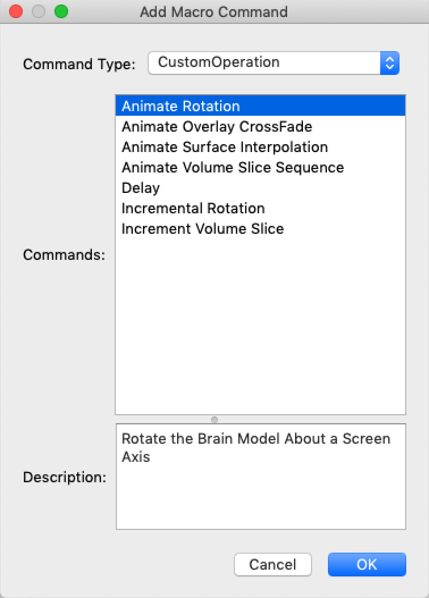
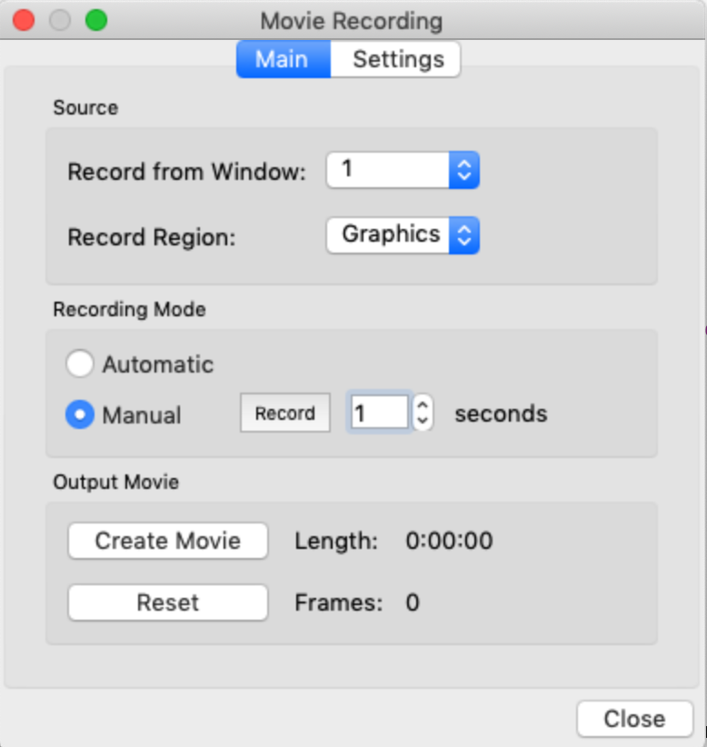
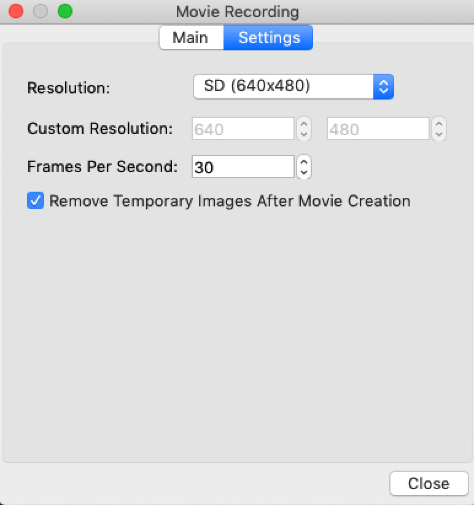

Macros Overview
Two new features have been added and continue to be updated in wb_view. The first new feature, macros, permit the automation of a sequence of commands in wb_view. These commands encompass events from user-interface controls and special complex operations. Facilities exist for creating macros by recording user interactions with the user-interface and manual editing of the macros. In addition, the macro system is integrated with another new feature, a new and improved movie creation system.
The macro system in wb_view is similar to the macro systems in other software applications such as Microsoft Office including PowerPoint’s animation system.
In wb_view, the user can record a macro while interacting that forms a sequence of commands from the user interacting with the controls in wb_view. In addition, facilities are available to edit a macro and to add, delete, or move commands within the macro. In addition, there are special complex commands the user may insert into a macro. For the most part, these special commands perform an animation-like operation.
In the current implementation, macros are always associated with the ‘current scene’. The current scene is either the most recently created or loaded scene. In most cases, the current scene defines valid preconditions for running of an associated macro. In the future, macros may also be stored in files or in the user’s preferences in order to simply a sequence of operations in wb_view. In addition, a designated ‘command key can be assigned to macro to simplify execution of the macro. For example, a macro that selects a particular volume slice view and selects slices at a particular coordinate.
As previously mentioned, the macro system is integrated with a new movie creation system. To simplify movie creation, the user may create a macro that generates all commands needed to create the movie. One key feature in the macro system allows the user to specify a delay before the execution of a macro command and a duration for special commands. This time duration, along with the movie system’s frame rate (number of frames per second), results in the related section in the movie running for the requested amount of time. For example, the special command for Surface Interpolation requires the user to enter the starting surface, ending surface, and a time duration. Wb_view will determine the number of iterations in the interpolation operation so that the interpolation runs for the requested duration in the movie. Note that a larger duration or higher frame rate results in a smoother animation operation.
Macro Menu
· Macros…. – Displays the Macro Dialog for editing and running macros. A button in the toolbar also will display this dialog.
· Start Recording New Macro… Displays a dialog for recording a macro from selections made in the GUI. Recording of a new macro is also available by pressing the Record button on the Macro Dialog.
· Stop Recording New Macro – Select this item to finish recording of a macro
Record Macro Dialog

· Store macro in – Chooses where the macro is placed. Choices are the current scene or into the user’s preferences (disabled at this time)
· Macro name – Name for the macro
· Short Cut Key – Allows user to launch the macro using a short cut key instead of running the macro from the macro dialog (primarily aimed at macros stored in the preferences)
· Description – User should enter a description of the macro in this text box
After pressing the OK button, make selections in the GUI. When finished, select Stop Recording from the Macro Menu.
Macro
Dialog with Macro Selected
Top Row Buttons
· Macros in – Selects macros displayed in the dialog. Macros are available from the current scene or preferences
· Reload button (curly arrow) – Reloads the current scene
· Import/Export (…) – Allows import or export of the macro group
Second Row Buttons
· Stop – Stops a macro that is running or stops recording of a new macro.
· Run – Run the selected macro (this button is only enabled when a macro is selected (it is disabled if a command is selected)
· Pause – Pauses the currently running macro. Pressing the button while a macro is paused will resume execution of the macro.
· Record – When recording is off, a red outline circle is displayed. Pressing the button while it is in this state will display the Record Button Menu as described below. When recording is active, a red filled circle is displayed and pressing the button will top recording.
· Insert (Plus) – Allows insertion of new macros or insertion of commands into an existing macro. See Insert Button Menu below
· Up Arrow – Move the selected item up one position
· Down Arrow – Move the selected item down one position
· X – Delete the selected item (macro or macro command)
Record Button Menu
· Record and Insert New Commands Below – Starts recording new command from the user interacting with the user-interface.
· Record and Insert New Macro Below – Starts recording a new macro from the user interacting with the user-interface.
Insert (plus) button Menu
· Insert New Command Below – Displays the Add Macro Command for inserting a new command.
· Copy and Insert Macro Below – Copies and inserts a macro, possibly from another scene.
· Insert New Macro Below – Inserts a new, empty macro.
The list view contains macro and macro commands. A macro has an arrow button on its left side that can be toggled to show the commands within the macro.
Macro -
· Name – Allows editing of the macro’s name
· Short Cut Key – Allows assignment of a short cut key to the macro
· Description – Allows editing of the macro’s description
Run Macro Options
· Window – Selects window in which macro runs
· Loop – Macro loops continuously until it is stopped and reloads the current scene when at the end of the loop
· Ignore delays and durations – While a macro is running, all delay times are ignored and for in iterative command, the iterations are limited to the first and last iterations.
· Move mouse to highlight controls – If the macro was recorded from the GUI the mouse will move and highlight a control until the control is processed. Note: If this is selected, the user will have difficulty using the mouse while the macro runs.
· Record movie while macro runs – Movie recording is enabled while the macro runs.
· Create movie after macro finishes – When running of the macro has completed, a movie is automatically created. When this checkbox transitions from unchecked to checked, a dialog for movie file selection is displayed.
Macro Dialog with a Macro Command Selected

Command
· Title – Title of the macro command
· GUI Name – This name is assigned by the GUI to uniquely identify items in the user-interface that are affected by the selected command.
· GUI Type – The type of item affected by the macro
· Delay – Amount to wait before the command starts
· Description – Describes the command
· Edit Parameters – The content varies and includes parameters for the command
Add Macro Command Dialog

The Add Macro Command dialog appears when the adds a command using the Plus button.
· Type – Selects the type of command. Choices are “Custom Operation” that performs a special operation and Widget for items in the user-interface.
· Commands – Lists commands available
· Description – Contains a description of the command
Movie Recording Dialog Main Tab

Source
· Record from Window – Selects window that is recorded
· Record Region – Choose from Graphics (area in which brain models are drawn) or Window (entire window including toolbar, toolbox, graphics, etc)
Recording Mode
· Automatic – Images are recorded anytime there is an update
· Manual – Pressing the record button will record an image for the selected number of seconds
Output Movie
· Create Movie – Displays a file selection dialog for selection of the movie file. If the user clicks the Save button on the file dialog, the movie is created. Creation of a movie may take some time. The format of the movie file is based upon the extension of the movie filename.
· Reset – Erases all recorded images. Typically used if the user wants to erase a partial recording and start over. In addition, this button is also used if the user has disabled “Remove temporary images after movie creation” on the settings tab.
Movie Recording Settings Tab

· Resolution – Selection the resolution (width/height) of the movie. This may only be changed when there are no recorded images.
· Custom Resolution – Enabled when Resolution is Custom and allows user to specify width and height.
· Frames Per Second – Number of frames per second in the movie. Some Macro Commands contain a duration (seconds) and will use the Frames Per Second to ensure proper length of movie.
· Remove temporary images after movie creation – After the movie is created, image that were used to make the movie are removed. If this is disabled (usually only for debugging), a new movie may contain recorded images from a previous movie. Use the “Reset” button on the Main tab to remove the temporary images.